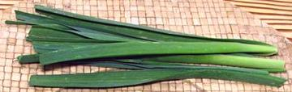

SAFARI
Users
Chives
[Allium schoenoprasum]
Native to Europe, North America and Asia, these chives are what is expected in American and European recipes. The stems of these chives are round and tubular, similar to scallion stems but more perfectly round and much smaller. Flavor is similar to scallions but the texture is much different due to the small size. The photo specimens, purchased from a Korean market in Los Angeles are unusual in including the white part.
Small packets, usually cut to about 6 inches long (green part only),
can be found in nearly every supermarket in North America, usually at
rather high prices, but they are rare in ethnic and produce markets
here in Southern California, Garlic Chives prevail in these markets.
Round chives are often chopped fine and sprinkled over salads and
other dishes as garnish, but are also used within recipes,
particularly for fish and potatoes.
Garlic Chives
[Chinese Chives; Gau choy, Kow choi (China); Gui chai (Thailand); Maroi nakupi (Nepa); Buchu (Korea); Nira (Japan); Ju hpu (Burma) Ju Myit (roots Burma); Allium tuberosum]
Used throughout East and Southeast Asia, these chives have more of a mild garlic flavor than regular chives. The leaves are thin narrow and flat, not "V" shape. They are used in stir fries, and as an ingredient in dumplings, soups and flat breads. While found in all the Asian markets here in Southern California, Korean markets may have them in more than one size. I have purchased them up to 19 inches long. Though the flavor is a bit different, they can be used to replace regular chives. Small ones have a very short storage life, at most a couple of days in the refrigerator, but I've had larger ones last a week.
Roots of this plant are a popular item to accompany snacks
in Burma, and are chewed on for their flavor. For this use they are
usually called "Leek Root", or ju myit.
Flowering Chives
[Chinese Flowering Chives; Allium tuberosum]
These are the tall flowering stalks of Garlic Chives, always sold
before the flower heads open (as shown in the photo). They are sold
separately from the leaves (and at a higher price) and are a popular
vegetable for Asian soups and stir fries. They store much better
than the leaves, more than a week or so loosely wrapped in plastic
and refrigerated.
Tarah Chives
 [Tara, Tarah (Persian); Allium ampeloprasum var. persicum]
This is what is sold as "chives" in many Southern California produce
markets. particularly those serving Near and Middle Eastern
communities. While Asian Garlic Chives have flat leaves, these leaves
markedly "V" shaped like those of leeks - in fact, if you read the
binomial name, they are a variety of leek greens. They are wider, a
bit firmer, and stronger in flavor than Garlic Chives, but last a
couple of days longer in the fridge.